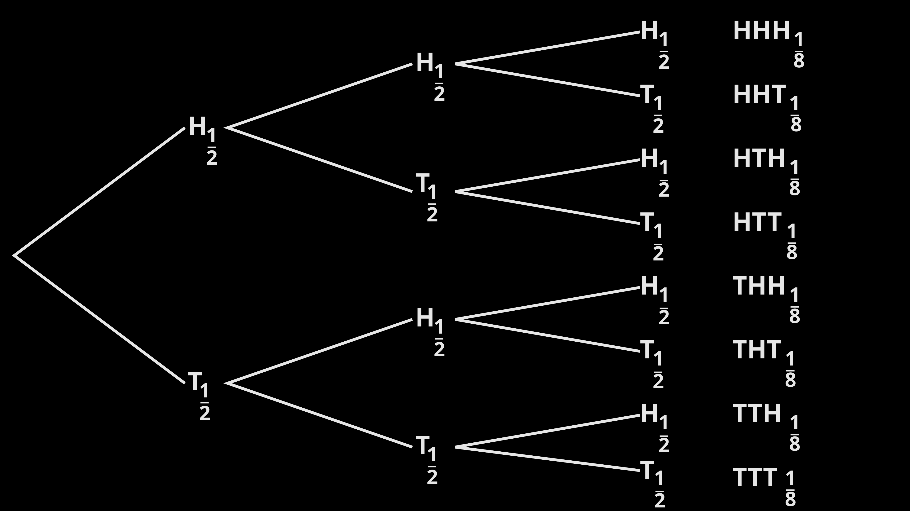

🧪 1. What is a Random Experiment?
In probability theory, an experiment (or trial) is the mathematical model of any procedure that can be infinitely repeated and has a well-defined set of possible outcomes (the sample space).
- Random experiment: more than one possible outcome → non-deterministic. Example: rolling a die.
- Deterministic experiment: only one possible outcome. Example: dropping a ball from a height under controlled gravity (ignoring quantum effects).
- Bernoulli trial: random experiment with exactly two mutually exclusive outcomes (success/failure, heads/tails).
💡 Key insight: When an experiment is performed, exactly one outcome occurs — but that outcome may belong to many different events. All those events are said to have occurred on that trial.
🔄 2. Experiments vs. Trials
A fixed number of repetitions of the same experiment form a composed experiment, and each individual repetition is called a trial.
📌 Example: Tossing a coin 100 times → each toss is a trial, and the whole procedure (100 tosses) is the experiment. After many trials, empirical probabilities can be estimated.
By pooling trial results, statisticians assess empirical probabilities and apply statistical analysis.
📐 3. Mathematical Description: Probability Space
A random experiment is modeled by a probability space, which consists of three essential parts:
- Sample space (Ω or S): the set of all possible outcomes.
- Set of events (ℱ): a sigma-algebra — each event is a set containing zero or more outcomes.
- Probability measure (P): a function that assigns probabilities to events.
📌 Step-by-step interpretation:
- After performing the experiment, a single outcome ω ∈ Ω is realized.
- All events in ℱ that contain ω are said to "have occurred".
- If the experiment is repeated infinitely many times, the relative frequency of each event will approach P(event) (law of large numbers intuition).
🎲 Classic Example — Two coin flips:
Sample space Ω = { (H,T), (T,H), (T,T), (H,H) } (order matters).
Define event A = "at least one heads occurs". Then A = { (H,T), (T,H), (H,H) }.
Outcome (H,T): event A occurs. Outcome (T,T): event A does not occur.
Sample space Ω = { (H,T), (T,H), (T,T), (H,H) } (order matters).
Define event A = "at least one heads occurs". Then A = { (H,T), (T,H), (H,H) }.
Outcome (H,T): event A occurs. Outcome (T,T): event A does not occur.
📚 4. Important Terminology & Properties
- Outcome: result of a single execution (e.g., rolling a 4 on a die).
- Event: a set of outcomes (e.g., rolling an even number).
- Sample space: exhaustive list of all possible outcomes.
- Mutually exclusive events: cannot occur at the same time (e.g., heads and tails on one coin toss).
- Collectively exhaustive events: cover the entire sample space.
🧠 Bernoulli trial reminder: An experiment with exactly two possible outcomes. Examples: coin flip, passing/failing a test, success/failure in a clinical trial.
🌳 5. Visual Representation

Experiments are often visualized using tree diagrams (as shown in the Wikipedia article). For three fair coin flips, a tree diagram shows all 2^3 = 8 paths, helping calculate probabilities of compound events.
✨ Why it matters: Understanding experiments is the foundation of probability theory, statistical inference, machine learning, and risk analysis. Every time you calculate a probability or run an A/B test, you're dealing with a probabilistic experiment.